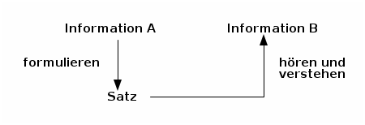

Welche Sprache spricht eigentlich ein Computer; oder: warum versteht Siri mich immer falsch?¶
Wer programmieren lernen will, der muss erst einmal verstehen, wie man sich seinem Computer gegenüber verständlich macht.
Das Klischee, dass Computer eine Sprache sprechen, die nur aus 0’en und 1’en besteht ist zwar nicht hundertprozentig treffend (die meisten Computerchips können auch eine Handvoll anderer Wörter, genannt Instruktionen), aber eigentlich gar keine schlechte Approximation.
Also, wir wissen nun, dass der Computer in Binärcode spricht und wir selbst aber eher deutsch, englisch, oder eine andere natürliche Sprache. Das ganze lässt sich also wie folgt zusammenfassen:

Ich denke,Sie sollten doch etwas spezifischer sein,hier in Schritt zwei.
Informationen und Daten¶
Egal ob Computer oder Mensch, unsere Sprachen haben einige Dinge gemeinsam. Erstmal, ganz grundlegend, benutzen wir unsere Sprache um Informationen auszutauschen. Wir haben Wörter, über deren Bedeutung wir uns weitestgehend einig sind und setzen diese zusammen in Sätzen, die dann hoffentlich die Information übermitteln, die wir im Sinn hatten.
Wenn sich zwei Personen treffen, die beide deutsch sprechen, dann ist das relativ unkompliziert. Beide Personen wissen, was die Wörter bedeuten und wie die Sätze aufgebaut sein müssen, damit die andere Person sie versteht.
Wenn ein Satz nicht klar formuliert war, dann kann es sein, dass Information A und Information B nicht gleich sind. Zwischen Menschen kann so ein Missverständnis zu gegenseitiger Frustration führen. Im Umgang mit Computern ist diese Frustration zwar einseitig, dafür aber oftmals umso größer.
Loki [verschmitzt]: Habt ihr das gesehen?Der Mann hat die Frau auf dem Fahrrad verfolgt!Alfrothul: Oh nein! Wie gemein!Ich hoffe, sie ist eine gute Läuferin!Brynja: Gar nicht gemein.Sie hat nicht bemerkt, dass ihr etwasaus dem Fahrradkorb gefallen war.
Wenn sich aber zum Beispiel ein Deutscher und ein Franzose treffen, ist deren Lingua franca (ironischerweise; siehe Link) wahrscheinlich Englisch. Beide denken immernoch die gleichen Gedanken wie zuvor, aber nun müssen sie andere Worte für die gleichen Konzepte benutzen. Die Sätze sind auch anders aufgebaut.
Ungefähr so funktioniert das auch mit Computern. Statt der Worte haben wir Daten, die Informationen repräsentieren:

Im Computer werden Daten von einem Daten-Konstruktor erstellt. Die Repräsentation der Information kann zwei Eigenschaften haben.
- Eine Repräsentation ist korrekt (englisch: sound), wenn der richtige Gebrauch der Daten-Konstruktoren immer Daten erstellt, die wirklich das repräsentieren, was sie repräsentieren sollen. (Sonst ist die Repräsentation inkorrekt (unsound).)
- Eine Repräsentation ist komplett (englisch: complete), wenn wir alle Information, die wir repräsentieren möchten mit Gebrauch der Daten-Konstruktoren repräsentieren können. (Sonst ist die Repräsentation inkomplett (incomplete).)
In OCaml (der Programmiersprache, mit der wir in diesem Kurs arbeiten), hat die Standard-Repräsentation von Integern (Ganzzahlen) eine feste Größe. Das heißt, dass (in diesem Fall) nur Zahlen zwischen -4611686018427387904 und 4611686018427387903 repräsentiert werden können. Diese Repräsentation ist korrekt, da alle Zahlen zwischen -4611686018427387904 und 4611686018427387903 wirklich mathematische Ganzzahlen darstellen. Diese Repräsentation ist nicht komplett, da Zahlen, die kleine als -4611686018427387904 oder größer als 4611686018427387903 sind nicht dargestellt werden können.
NB: Das Wort „Daten“ (englisch „data“) kommt aus dem Lateinischen und ist eigentlich Plural. Der korrekte Singular ist „Datum“.
Übung 01¶
Computer benutzen eine binäre Repräsentation von Zahlen (das mit den Nullen und
Einsen). Benutze Emacs und den OCaml-Code für die gegenwärtige Woche um
herauszufinden, welchen Exponenten von 2 OCaml höchsten repräsentieren kann.
Version¶
Erstellt [2022-10-10]